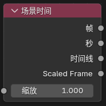
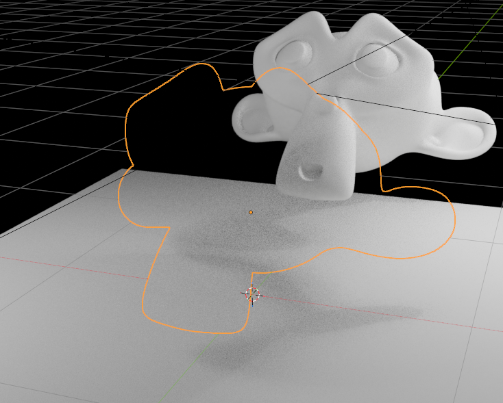
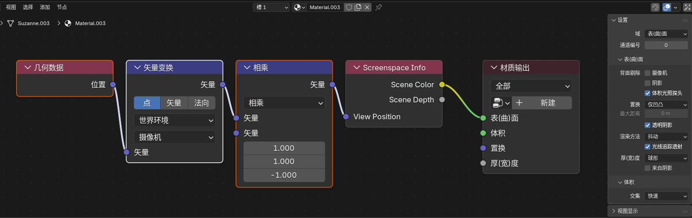
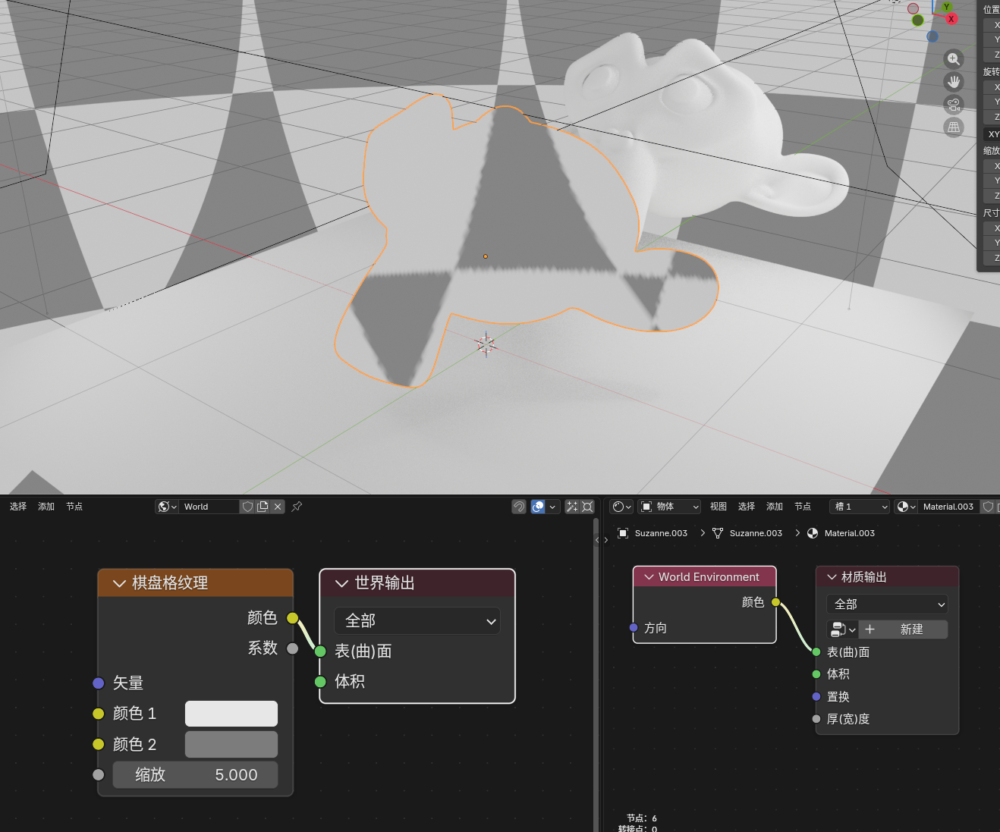
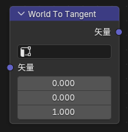
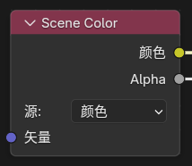

二、主要扩展节点¶
1. Eevee 通用辅助节点
Render Info¶
入口¶
Add > Input > Render Info

输出¶
Frag Coord：屏幕空间坐标（xy 归一化到 0-1，z 为深度）Width：渲染区域宽度Height：渲染区域高度
作用¶
提供当前 Eevee 渲染窗口的坐标和像素尺寸。
Scene Time¶
入口¶
Add > Input > Scene Time

二、主要扩展节点¶
1. Eevee 通用辅助节点
Render Info¶
入口¶
Add > Input > Render Info
输出¶
Frag Coord：屏幕空间坐标（xy 归一化到 0-1，z 为深度）Width：渲染区域宽度Height：渲染区域高度
作用¶
提供当前 Eevee 渲染窗口的坐标和像素尺寸。
Scene Time¶
入口¶
Add > Input > Scene Time
输入¶
Scale：用于缩放帧数的数值
输出¶
Frame：当前帧数Seconds：当前帧对应的秒数Timeline：0-1 映射的场景时间（从开始帧到结束帧）Scaled Frame：当前帧除以Scale后的结果
Screen Derivative¶
入口¶
Add > Utilities > Math > Screen Derivative

功能¶
获得屏幕之间相邻像素之间的差异：
DDX：X 方向的屏幕空间导数DDY：Y 方向的屏幕空间导数DDXY：DDX和DDY的组合（DDX + DDY）
Portal In / Portal Out¶
入口¶
Add > Layout > Portal InAdd > Layout > Portal Out

功能说明¶
这是一组用来整理节点连线的“传送门”节点。
工作方式可以理解为：
Portal In：在当前节点树里存一个有名字、有类型的值Portal Out：在同一节点树内按名字把这个值取出来继续使用
其他¶
- 新建
Portal In时会自动生成唯一名称。 Portal Out上带有放大镜按钮，可快速跳转到对应的Portal In位置。
限制¶
- 只在同一个 shader node tree 内识别。
- 不支持跨节点树。
- 不支持跨节点组自动穿透。
- 同名输入应只保留一个来源。
2. Eevee 物体材质节点
Render Texture¶
入口¶
Add > Texture > Render Texture

作用¶
读取前面在场景里配置好的 Render Textures 条目。
输入输出¶
- 输入：
Vector - 输出：
Color、Alpha
Screenspace Info¶
入口¶
Add > Input > Screenspace Info

输入输出¶
- 输入：
View Position（摄像机空间位置） - 输出：
Scene Color（场景颜色）、Scene Depth（场景深度值）
作用¶
获得当前的渲染缓冲颜色或深度的内容。

使用说明¶
- 渲染设置中需要打开
Raytracing - 材质选项
Render Method选择Dithered - 材质选项打开
Raytraced Transmission View Position默认输入为position变换到摄像机空间，再反转 z 轴

World Environment¶
入口¶
Add > Input > World Environment

输入输出¶
- 输入：
Direction（采样方向） - 输出：
Color（环境颜色）
作用¶
直接采样 Eevee 的世界环境颜色，不依赖屏幕背后是否还有几何。
说明¶
- 读取世界环境光照探头颜色，可在世界环境中调整分辨率

Direction不连接时，默认使用当前表面的视线方向Direction连接后，可以按指定方向采样世界环境
World To Tangent¶
入口¶
Add > Utilities > Vector > World To Tangent

输入输出¶
- 输入：
Vector（世界空间方向） - 输出：
Vector（切线空间方向）
作用¶
把一个世界空间方向向量转换到当前表面的切线空间。
说明¶
- 节点面板中可指定
UV Map，该 UV 的切线会作为转换基底。
Basis Transform¶
入口¶
Add > Utilities > Vector > Basis Transform

输入输出¶
- 输入：
Vector（待变换的点、方向或法线） - 输入：
Origin（自定义基底的原点，仅Point模式使用） - 输入：
X Axis、Y Axis、Z Axis（自定义坐标基轴） - 输出：
Vector（变换后的结果）
作用¶
在材质节点里用 原点 + 三根基轴 来完成自定义坐标系变换，适合在没有矩阵输入类型的情况下处理点、方向向量和法线。
面板选项¶
-
Direction -
To Basis：把输入从世界/当前坐标解释为自定义基底下的坐标 -
From Basis：把输入从自定义基底坐标还原回外部坐标 -
Type -
Point：会参与Origin平移 -
Vector：只做方向/长度变换，不参与平移 -
Normal：按法线规则变换，并在输出前归一化 -
Basis Input -
XYZ：直接使用三根输入轴 -
XY/XZ/YZ：只使用两根轴，第三根轴由叉积自动补出 -
Orthonormalize -
开启后会把输入轴正交化并归一化，更适合做切线空间、局部朝向这类纯方向基底
-
关闭后会保留输入轴长度，可用于带缩放的基底变换
-
Fallback -
Pass Through：当基底退化时直接输出原始输入 -
Zero：当基底退化时输出0, 0, 0
Bevel¶
入口¶
Add > Input > Bevel

输入输出¶
- 输入：
Radius（倒角半径）、Normal（表面法线提示） - 输出：
Normal（倒角后的近似法线）
面板选项¶
Samples（采样次数越高质量越好，性能消耗越大）
作用¶
在 Eevee 中生成近似的倒角法线，用来让硬边看起来更圆润。
说明¶
-
Cycles仍然使用官方原本的真实几何倒角算法 -
Eevee这里使用的是同物体屏幕空间近似 -
结果依赖当前视角、深度缓冲和可见邻域，不等同于
Cycles的真实Bevel
Curvature¶
入口¶
按灯光类型自动出现的输出¶
-
Position：灯光世界位置 -
Direction：灯光方向 -
Radius：灯光半径 -
Spot Size：灯光尺寸 -
Sun Angle：太阳角度
说明¶
- 如果你要做逐灯处理，应该使用
NPR Tree里的For Each Light。
Scene Color¶
入口¶
Add > Input > Scene Color

仅在 Filter 域下可用。
作用¶
读取 Eevee 当前场景缓冲，可在节点面板中切换 Source：
-
Color：读取渲染的最终场景颜色 -
Depth：读取线性深度值 -
Normal：读取渲染法线 -
Position：读取世界空间坐标
输入输出¶
-
输入：
Vector -
输出：
Color、Alpha